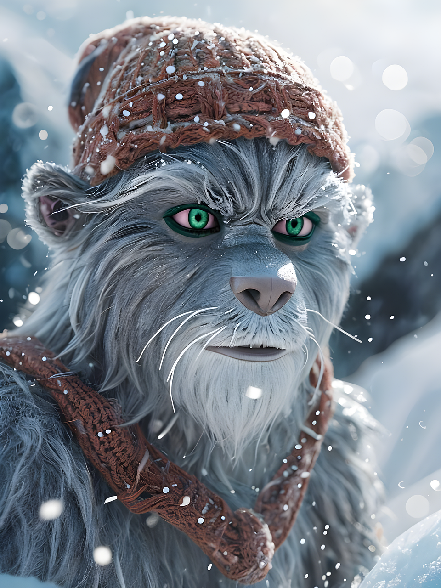

Elions Winter-Rätseltour
Das war noch nicht richtig.
Richtig!

Wenn der Winter nach Saalbach kommt, wird die Welt leise. Der Schnee legt sich sanft auf die Berge und alles beginnt zu glitzern. Elion ist ein freundliches Schneewesen. Er bringt den Schneezauber in den Ort und schenkt den Bergen ihr winterliches Leuchten. Doch eines Tages verirrte sich Elion. Sein Zauber blieb an einem geheimen Ort gefangen. Nur Kinder können helfen. Acht Buchstaben sind versteckt – bewacht von Rätseln. Wenn du sie findest, wird Elion befreit.
Du hast den nächsten Buchstaben gefunden!
Beeil dich weiter – nur gemeinsam können wir
die Magie befreien und den Schneezauber retten!
Das war noch nicht richtig.
Richtig!
Du hast Elion befreit.
Sage das Lösungswort an der Rezeption.